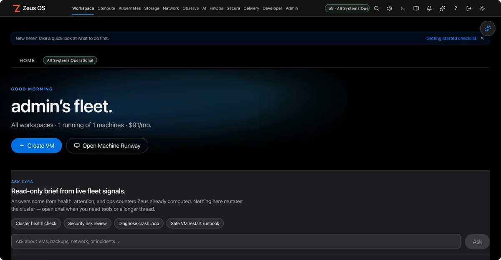
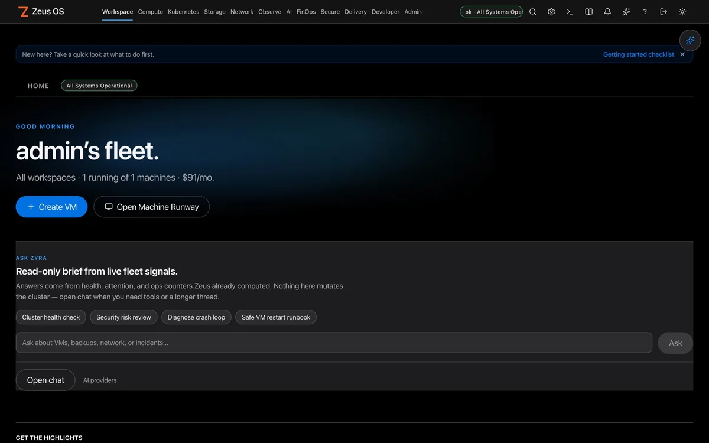
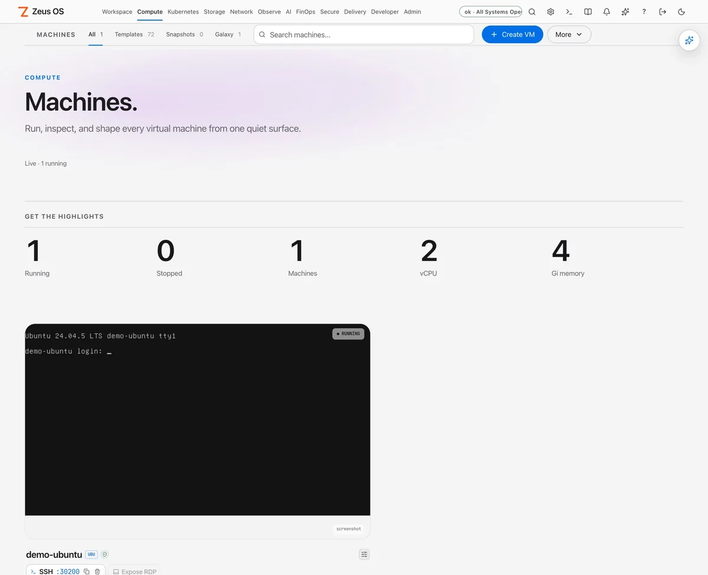
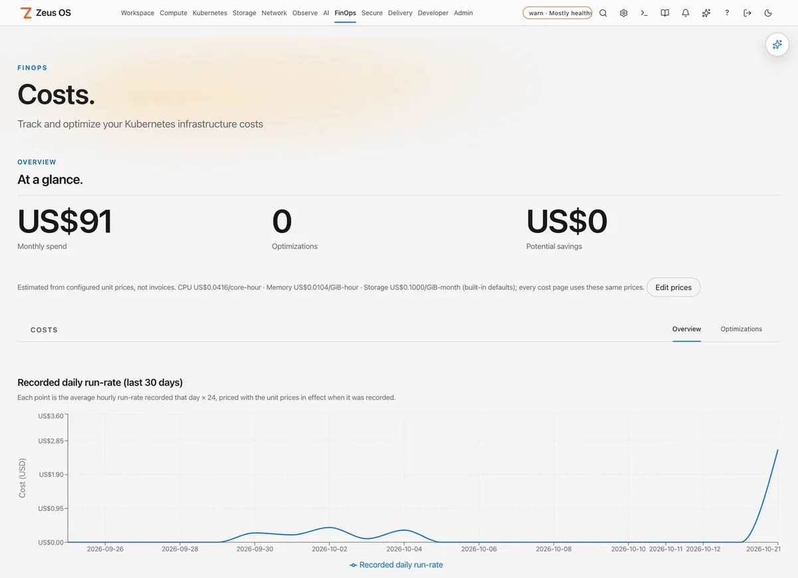
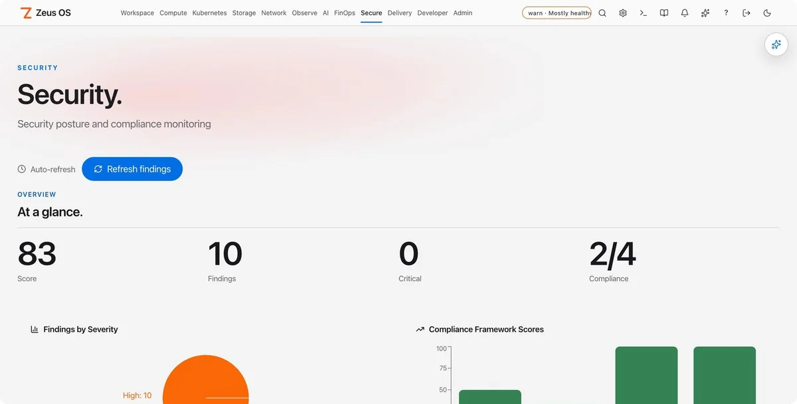
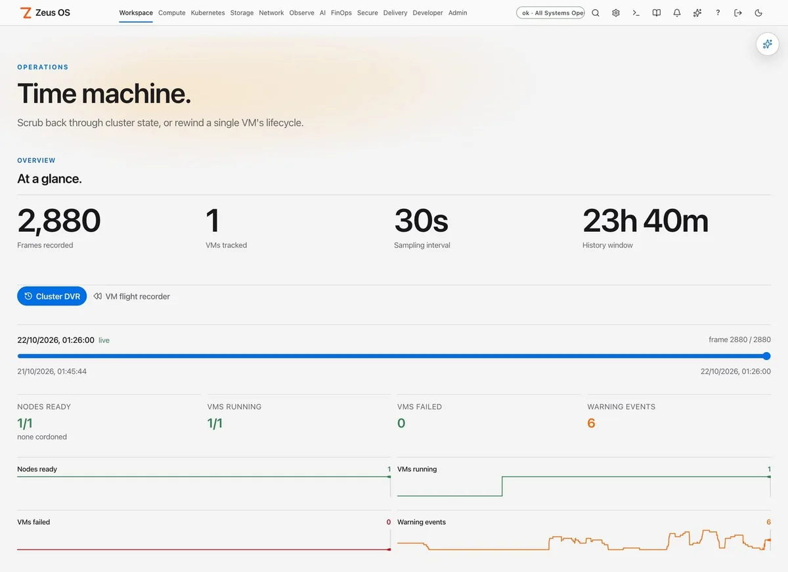
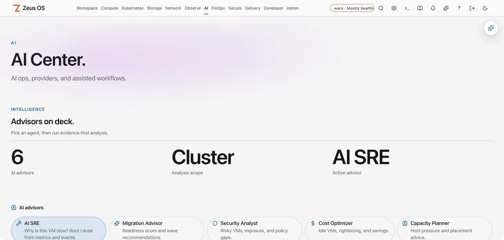
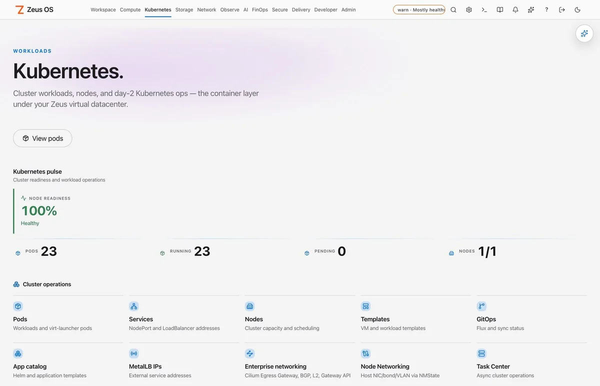

Zyvor · KubeVirt control plane
Zeus OS
Every VM. One control plane.
See every VM. Move it, secure it, cost it. From one place. The visual control plane for KubeVirt virtual machines and Kubernetes infrastructure. A web dashboard, a terminal UI, a CLI and an API, all driven by one engine, so they always agree.
Install with HelmSee the features
Preview · Helm chart and container image are public · no signed release yet · Mac app: macOS 27, notarized

Running KubeVirt shouldn't mean living in kubectl and YAML.
Zeus OS is a visual VM command center, with a terminal UI and CLI for the same operations. Unknown values are shown as unknown, never as zero, and features that are only partly built carry a preview banner.
Features
Home
Your fleet, at a glance.
Fleet status, an Ask Zyra brief built from signals Zeus already computed, and the headline numbers.
Home, page by page
Machines
Every VM, with its real console.
Highlights, search and the one primary action on top. Each VM shows its real console screenshot (a VM with none says so, instead of drawing a fake one). Click a VM to open its own full page.
Machines, page by page
Costs
Cost, from one price model.
Monthly spend and savings from one price model you configure, with the recorded run-rate over time. Estimates, not invoices.
Costs, page by page
Security
Posture, scored.
Posture score, findings by severity and compliance framework scores.
Security, page by page
Time machine
Scrub the cluster back through time.
Scrub the cluster back through recorded frames, or rewind a single VM's lifecycle.
Time machine, page by page
AI Center
Six advisors, evidence first.
Six advisors (AI SRE, Migration, Security, Cost, Capacity, Network) with evidence-first analysis.
AI Center, page by page
Kubernetes
The container layer, one click away.
Node readiness, pod counts and every day-2 surface for the container layer.
Kubernetes, page by page
And the rest of the platform.
Four interfaces, one engine
A web dashboard, a terminal UI, a CLI and an API all run on one engine, so they always agree. CLI reference.
Consoles
VNC and serial in the browser, native RDP and SSH through your own client.
Live migration and DRS
A live-migration assistant (a preview: some pre-checks are estimates and the target node is not yet passed to KubeVirt) and HA/DRS balancing from suggest-only to fully automated, with a per-VM cooldown and a history of what the engine moved and why.
Multi-tenant
Tenant-scoped views, quotas and role-based access.
Identity
Local, LDAP, SAML and OIDC sign-in, SCIM v2 provisioning and WebAuthn security keys. Enterprise SSO.
Ask Zyra
An assistant that answers from your cluster and your own docs, with citations. Private code stays out of remote models unless you allow it.
Attention and DVR
A ranked Attention feed, a cluster flight recorder (DVR), events and alerting.
Every feature, one by one
146 features across 19 groups, with the Preview and Partial ones marked. Read the list.
Secure by default.
Auth is on
Authentication is on by default; ZEUS_OS_NO_AUTH=1 is for a local trial only. The chart refuses to install without an admin password.
Role-based and audited
Role-based access with tenant scoping, and an audit trail on actions.
Preview, then apply
Risky network changes use a preview-then-apply gate.
Requirements.
- Cluster
- Kubernetes with KubeVirtCDI for image import.
- Tooling
- helm 3.8+ and kubectlhelm 3.8+ for OCI chart support.
- Optional
- IntegrationsVelero, Cilium, PacketWolf / Netra, an OIDC, SAML or LDAP provider.
- Mac app
- macOS 27Signed with a Developer ID and notarized by Apple.
- Status
- PreviewThe Helm chart and container image are public. There is no signed release yet.
- Licence
- Zeus OS EULANo open-source licence is granted.
Preview, stated plainly
The Helm chart and the container image are public so you can try Zeus OS, but there is no signed release yet: no checksums, signatures or SBOM. Where a feature is partial, the product and its docs say so. In the Mac app, write actions, both consoles, notifications, Shortcuts actions and the certificate trust prompt have not yet been tried against a live server (they are unit-tested and compile). Details: Mac app.
Install in three steps.
Install the chart
You need a Kubernetes cluster with KubeVirt,
helm3.8+ andkubectl. The chart pullsghcr.io/zyvorai/zeus-os-weband refuses to install without an admin password.Open the dashboard
It serves HTTPS out of the box with a self-signed certificate (valid ten years, reused on upgrade), so browsers warn until you bring your own.
Sign in as admin
Use the password you set. Authentication is on by default. Next: Getting started, Admin basics.
Kubernetes (Helm, OCI)
helm install zeus-os oci://ghcr.io/zyvorai/charts/zeus-os --version 0.3.0 \
--set-string config.localAuth.adminPassword=YOUR_PASSWORD
kubectl port-forward svc/zeus-os 5050 # then open https://localhost:5050Container image
ghcr.io/zyvorai/zeus-os-web. The chart pulls it for you. Air-gapped clusters: air-gapped install.
Mac app
A native SwiftUI client for a running Zeus OS server. Requires macOS 27. Signed with a Developer ID and notarized by Apple. Download Zeus-1.0.0.dmg or read the Mac app guide.
Live demo
Open zeus.zyvor.dev and sign in as viewer with the password Zeus-Live-Demo-Viewer-2026!. A shared, read-only copy on a small test cluster with a few tiny VMs.
Licence.
Zeus OS is distributed under the Zeus OS EULA. The licence text will be added before the first release. It covers the Mac app too. No open-source licence is granted to any part of it.
Price: ₹2,20,999 per node per year including 18% GST in India; US$2,230 per node per year excluding tax elsewhere. A free 30-day trial key and 30-day proof of concept are available: write to sales@zyvor.dev. Buy / get a quote: zyvor.dev/buy.
Prices: INR incl. 18% GST in India; US dollars excl. tax elsewhere (VAT, GST or sales tax added where applicable). Pay online by UPI, card or netbanking where a buy page exists; international cards work (charged in rupees); or request a US-dollar invoice by bank transfer. Custom pricing: contact sales@zyvor.dev.
This repository distributes binaries, container images, the Helm chart and documentation. It contains no source code. Commercial licensing and permissions: sales@zyvor.dev. LICENSE.
Questions, answered.
Is Zeus OS ready for production?
It is a preview. The Helm chart and the container image are public so you can try it, but there is no signed release yet. Where a feature is partial, the product and its docs say so.
What do I need to run it?
A Kubernetes cluster with KubeVirt (and CDI for image import), plus helm 3.8+ and kubectl. Zeus OS uses KubeVirt and CDI custom resources and subresources first, rather than shelling out to virtctl.
Can I try it without installing?
Yes: the live demo at zeus.zyvor.dev, as the read-only viewer role. It is a shared copy on a small test cluster with a few tiny VMs.
How do users sign in?
Local, LDAP, SAML and OIDC sign-in, with SCIM v2 provisioning and WebAuthn security keys. Authentication is on by default.
Are the costs real invoices?
No. Cost pages use one price model that you configure and show estimates, not invoices. Unknown values are shown as unknown, never as zero.
What is the Mac app?
A native macOS client for a running Zeus OS server, built with SwiftUI. It uses the same REST API as the web dashboard. Viewers get a read-only app; editors and admins see the write actions. It requires macOS 27. Mac app guide.
Is the source code available?
No. This repository distributes binaries, container images, the Helm chart and documentation, and contains no source code. No open-source licence is granted.
How do I report a vulnerability?
Privately, to security@zyvor.dev. See SECURITY.md.